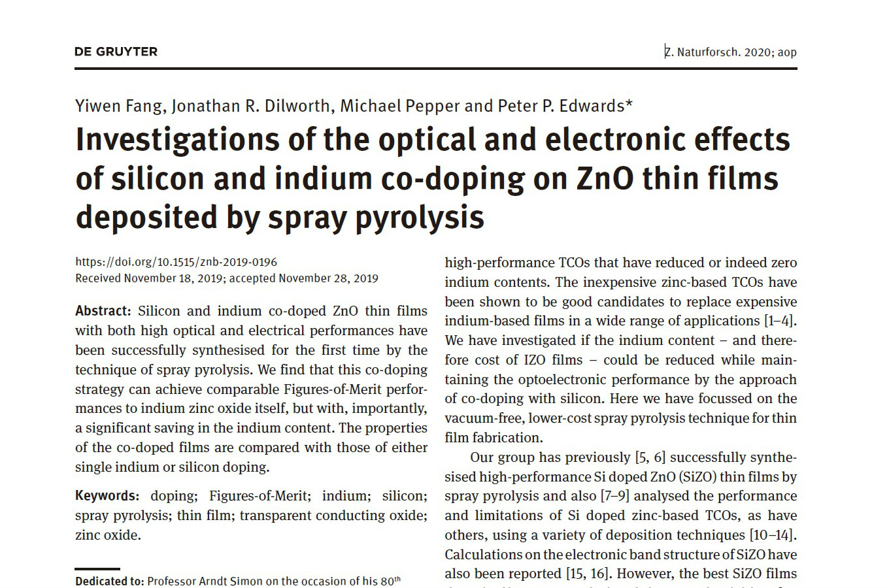
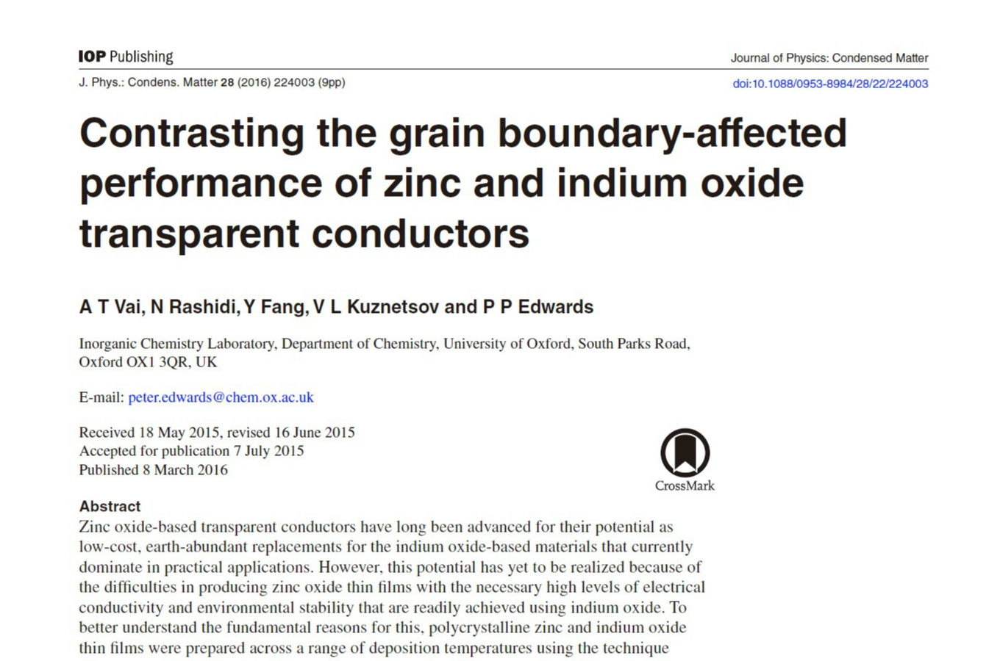
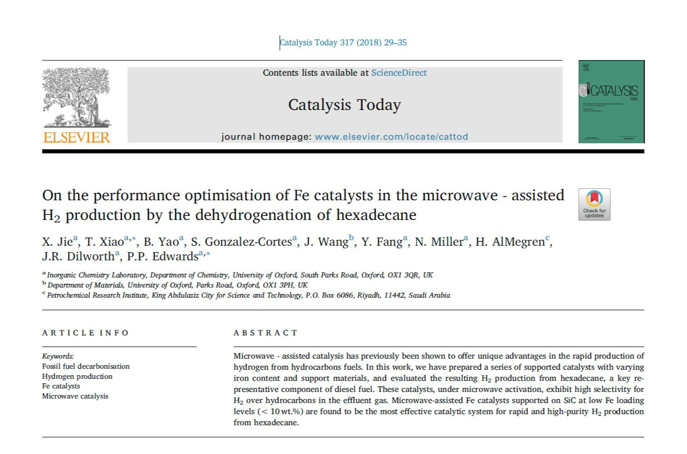
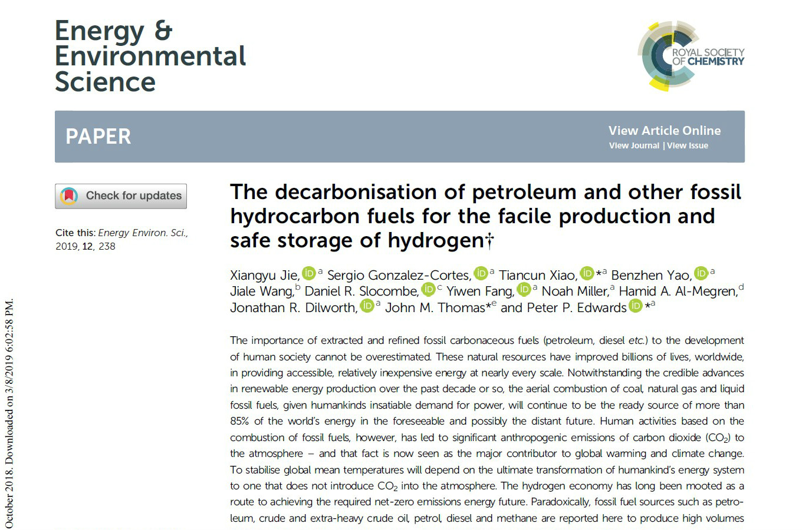

|  |
Fang, Y., Dilworth, J. R., Pepper, M. & Edwards, P. P. 2020.
Investigations of the Optical and Electronic Effects of Silicon and Indium Co-Doping on ZnO Thin Films
Deposited by Spray Pyrolysis.
Zeitschrift für Naturforschung B: A Journal of Chemical Sciences, 75, 23.
|
|  |
Vai, A. T., Rashidi, N., Fang, Y., Kuznetsov, V. L. &
Edwards,
P. P.
2016. Contrasting the Grain Boundary-Affected Performance of Zinc and Indium Oxide Transparent Conductors.
Journal of Physics: Condensed Matter, 28, 224003.
|
|  |
Jie, X., Xiao, T., Yao, B., Gonzalez-Cortes, S., Wang, J., Fang,
Y., Miller, N., AlMegren, H., Dilworth, J. R. & Edwards, P. P. 2018. On the Performance
Optimisation of Fe Catalysts in the Microwave - Assisted H2 Production by the Dehydrogenation of
Hexadecane.
Catalysis Today, 317, 29-35.
|
|  |
Jie, X., Gonzalez-Cortes, S., Xiao, T., Yao, B., Wang, J., Slocombe, D. R.,
Fang, Y., Miller, N., Al-Megren, H. A., Dilworth, J. R., Thomas, J. M. & Edwards,
P.
P. 2019. The Decarbonisation of Petroleum and Other Fossil Hydrocarbon Fuels for the Facile Production and
Safe Storage of Hydrogen. Energy & Environmental Science, 12, 238-249.
|